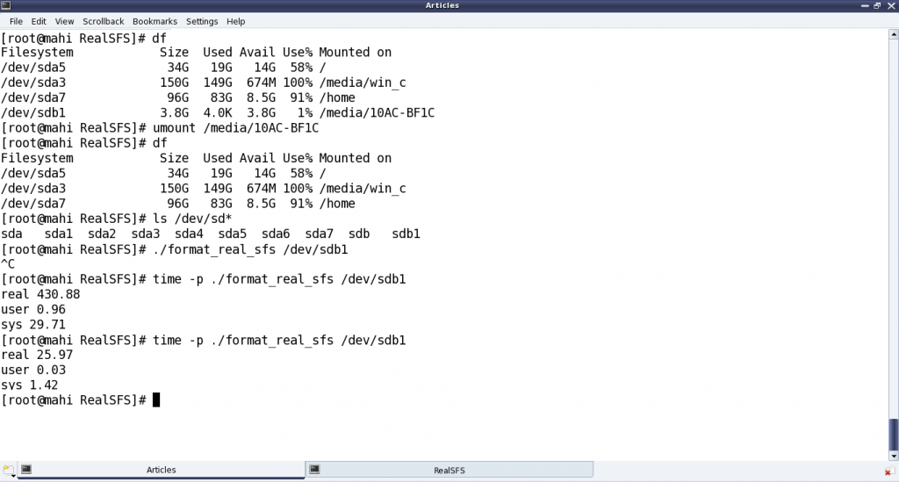

The Semester Project – Part IV: Formatting a Pen Drive
This twenty-first article, which is part of the series on Linux device drivers, takes the next step towards writing a file system module by writing a formatting application for your real pen drive.
Thanks friends for your confidence in Shweta and not trying to help her out in figuring out the issues with her code. She indeed figured out and fixed the following issues in her code:
- sfs_read() and sfs_write() need to check for the read and write file permissions before proceeding to read and write, respectively
- sfs_write() should free any previously allocated blocks, as write is always over-write
- Moreover, the earlier written sfs_remove() also, now needs to free up the allocated blocks.
SFS Format for a real partition
There after Pugs took the lead and slightly modified Shweta’s format_sfs.c and sfs_ds.h files to format a real pen drive’s partition. The key change is that instead of creating the default regular file .sfsf to format, now it would be operating on an existing block device file corresponding to an underlying partition, say something like /dev/sdb1. So,
- It would get the partition’s size from the partition’s block device file itself, rather than taking it as a command-line argument.
- Accordingly, it would now expect the partition’s block device file name instead of size, as main()‘s first argument.
- Also, it would not need the mark_data_block() to grow the file equal to the partition size.
The ioctl command BLKGETSIZE64 gets the 64-bit size of the underlying block device partition, in bytes. Then, it is divided by the block size (SIMULA_FS_BLOCK_SIZE) to get the partition’s size in block units. Here is the corresponding modified snippet of the main() function in format_real_sfs.c (updated format_sfs.c), along with the required typedef in real_sfs_ds.h (updated sfs_ds.h). (Note: For readability, Pugs renamed all uint by byte):
typedef unsigned long long byte8_t;
...
byte8_t size;
sfs_handle = open(argv[1], O_RDWR);
if (sfs_handle == -1)
{
fprintf(stderr, "Error formatting %s: %s\n", argv[1], strerror(errno));
return 2;
}
if (ioctl(sfs_handle, BLKGETSIZE64, &size) == -1)
{
fprintf(stderr, "Error getting size of %s: %s\n", argv[1], strerror(errno));
return 3;
}
sb.partition_size = size / SIMULA_FS_BLOCK_SIZE;
As per the above code, the following additional header files need to be included:
#include <errno.h> /* For errno */
#include <string.h> /* For strerror() */
#include <sys/ioctl.h> /* For ioctl() */
#include <linux/fs.h> /* For BLKGETSIZE64 */
With all the above changes compiled into format_real_sfs, Pugs plugged in his pen drive, partition of which got auto mounted. Then, he took backup of its content and unmounted the same – ready for a real SFS format of the pen drive partition.
Caution: Take a backup of your pen drive’s content – you are formatting it for real. Be careful in choosing the right partition of your pen drive. Otherwise, you may forever lose data from your hard disk or even make your system un-bootable. You have been warned.

Figure 36 demonstrates all the above but backup steps at root prompt #. Instead, one may use sudo, as well. Note that Pugs got his pen drive partition mounted at /media/10AC-BF1C, and the corresponding device file is /dev/sdb1 (/dev/sdb being the complete pen drive). You may have both these differently. Accordingly, follow the steps for yourself. Also, note that, the real SFS formatting is then started using the following command:
# ./format_real_sfs /dev/sdb1
And then, there is a ^C (Ctrl-C) immediately after that, basically terminating the formatting. Aha! Did Pugs realize something important was there on the pen drive? Not really, as his pen drive is already empty. Actually, what happened is that formatting was going on for quite some time – so Pugs had some doubt about his code changes and so he terminated it. Reviewing his code didn’t yield much, so he reissued the formatting, this time with the time command, to figure out exactly how much time is the formatting taking and then may be debug/fix that. And finally! The formatting is complete but after a whopping 430.88 seconds (7+ minutes), yes minutes. time basically shows the real time taken (includes the time when other processes has been running after context switch), time executed in user space, time executed in kernel space. That’s huge – something needs optimization. And it didn’t take much time for a close review to undermine the issue. The key time taker code would be the clear_file_entries() function. Right now its clearing the file entries one by one, i.e. writing 64-byte sized file entries one by one – that’s pretty non-optimal. A better approach would be to fill up a block with such entries, and then write these blocks one by one. In case of a 512-byte block (i.e. SIMULA_FS_BLOCK_SIZE defined as 512), that would mean 8 file entries in a 512-byte block and then writing these 512-byte blocks one by one. So, Pugs changed the clear_file_entries() function to do the same, and viola! formatting is complete in a little less than 26 seconds. Here’s the answer to your curiosity – the re-written clear_file_entries() function:
void clear_file_entries(int sfs_handle, sfs_super_block_t *sb)
{
int i;
byte1_t block[SIMULA_FS_BLOCK_SIZE];
for (i = 0; i < sb->block_size / sb->entry_size; i++)
{
memcpy(block + i * sb->entry_size, &fe, sizeof(fe));
}
for (i = 0; i < sb->entry_table_size; i++)
{
write(sfs_handle, block, sizeof(block));
}
}
Now, you may plug out and plug in the pen drive back. And you may wonder that neither it is auto-mounted, nor you are able to mount it. That’s expected, as now it is formatted with a file system which is not yet coded as (kernel) module and there is no one in the kernel to decode the same. So, coding that kernel module would be the ultimate step to get everything working like with any other existing file systems (vfat, ext3, …). If you are worried that your pen drive is spoiled, you may re-format it with the FAT32 (vfat) file system as follows (as root or with sudo):
# mkfs.vfat /dev/sdb1 # Be careful with the correct partition device file
and then plug out & plug in the pen drive to get auto-mounted. But, you know Pugs being a cool carefree guy, instead went ahead to try out browsing the Simula file system created on the pen drive partition.
Browsing the pen drive partition
Obviously, there were slight modifications to the browse_sfs.c application as well, in line with the changes to format_sfs.c. Major one being compulsorily taking the partition’s device file to browse as the command-line argument, instead of browsing the default regular file .sfsf.
All the updated files (real_sfs_ds.h, format_real_sfs.c, browse_real_sfs.c and Makefile) are available from rsfs_code.tar.bz2.
Figure 37 shows the browser in action. However, the coolest browsing would be the same way as is done with all other file systems, using the shell commands cd, ls, … Yes, and for that we would need the real SFS module in place. Keep following what’s Pugs upto for getting that in place.